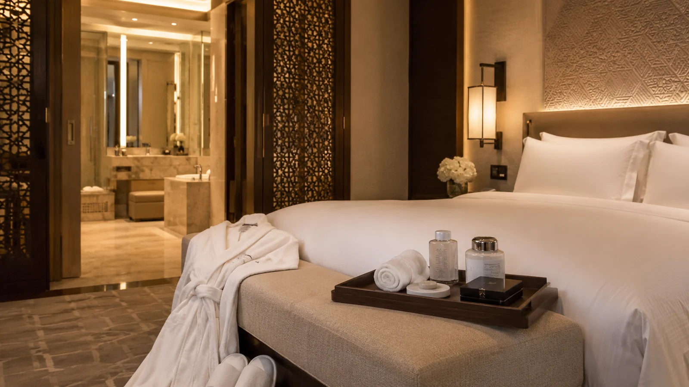

Our Vision
To become a trusted regional partner for dependable infrastructure and premium hospitality supply solutions.
Oman-based company supporting water, wastewater, treated water, telecom infrastructure and premium hospitality supply requirements across Oman and the GCC.
AFQ AL ASMAH NATIONAL is an Oman-based company specializing in contracting, utility services, infrastructure support and hospitality supply solutions.
We provide services in water, wastewater, treated water networks, chamber works, civil utilities, fiber optic cabling and telecommunication infrastructure. ECOLUXE is the hospitality brand of AFQ AL ASMAH NATIONAL, supplying hotel amenities, guest supplies, linen, OS&E products and customized hospitality solutions across Oman and the GCC.

To become a trusted regional partner for dependable infrastructure and premium hospitality supply solutions.
To deliver safe, high-quality and sustainable solutions through responsive service, skilled execution and strong partnerships.
Clear communication, responsible delivery and consistent attention to quality at every stage.
International presentation is not only design. It is how the company communicates, coordinates and protects trust from first enquiry to final delivery.
Defined requirements, department routing and practical next steps.
Coordination, documentation and quality checks across each stage.
Refined client-facing presentation for infrastructure and hospitality work.
Products and workmanship aligned with project and hospitality expectations.
Risk-aware planning and disciplined on-site execution.
Responsive coordination and realistic delivery commitments.
Responsible material choices and eco-conscious hospitality options.
Long-term relationships built through transparency and service.
Solutions tailored to operational priorities and brand standards.